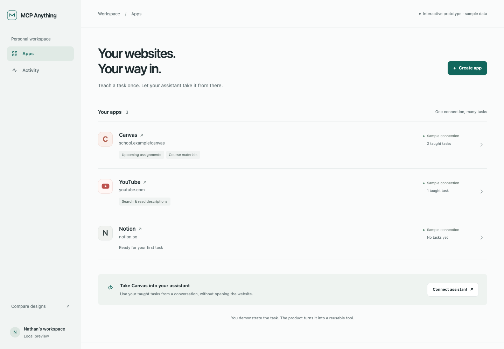

Calm workspace
AA fixed sidebar keeps websites close and makes room for detailed tasks.
Open prototypeThree ways to teach website tasks and use them through your assistant.
Interactive prototypes · sample data · no real accounts connected
Create a website app, teach a task, review its result, and connect an assistant.
Each option also includes a sample verification flow.
Choose the name you like. We can change the layout and details together.